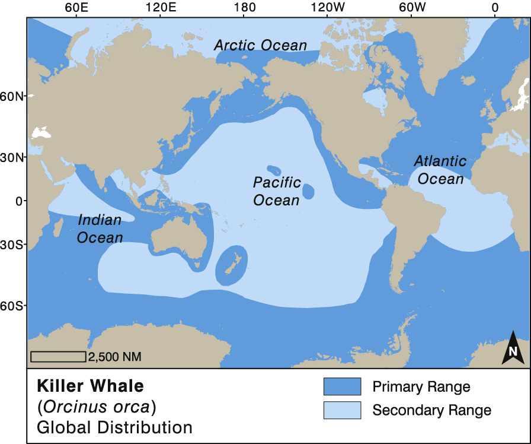

Orcas are found in all Oceans and most Seas. While they are most abundant in colder waters like Antarctica, Norway, and Alaska, they are also found in tropical and subtropical waters. The most well-studied killer whale populations occur in the eastern North Pacific Ocean.
Cold waters: Most common in colder waters, such as Antarctica, Norway, and Alaska. They can be found in the higher latitudes of the Southern Ocean and along the coast of northern Norway.
Tropical waters: Can be found in tropical and subtropical waters, such as Florida, Hawaii, Australia, the Galapagos Islands, the Bahamas, and the Gulf of Mexico.
Inland seas: Can be found in many partially-enclosed or inland seas, such as the Gulf of California, the Gulf of Mexico, the Mediterranean, the Arabian Gulf, and the Red Sea.
Freshwater rivers:Rarely, orcas have been seen in freshwater rivers, such as the Rhine, the Thames, and the Elbe. One orca was even seen traveling 110 miles up the Columbia River in pursuit of fish.